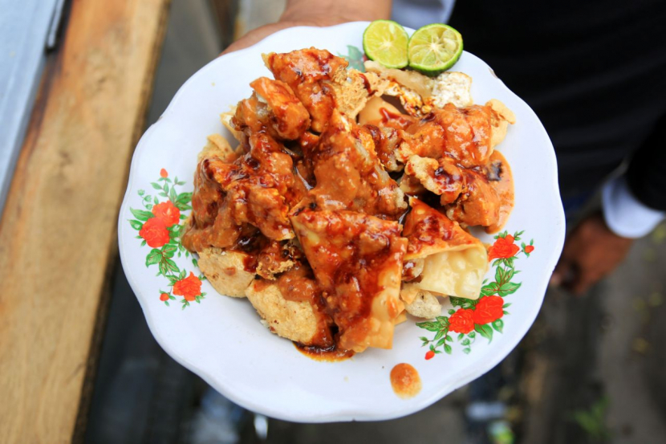
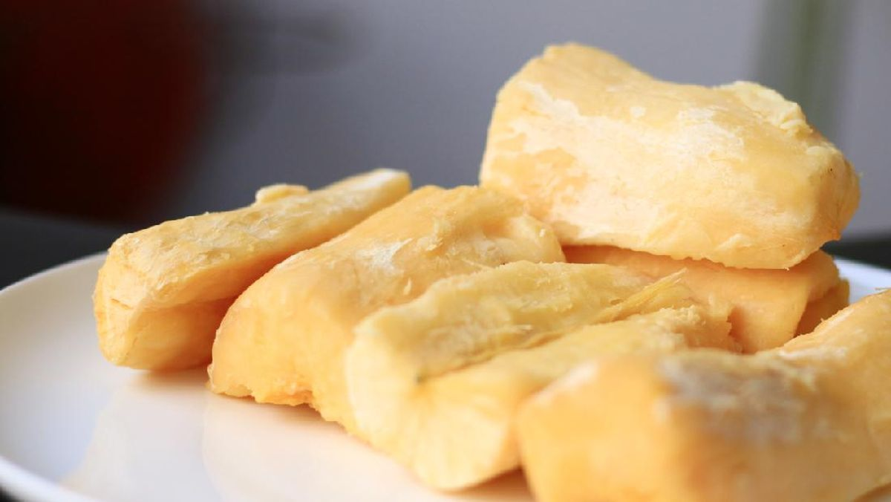
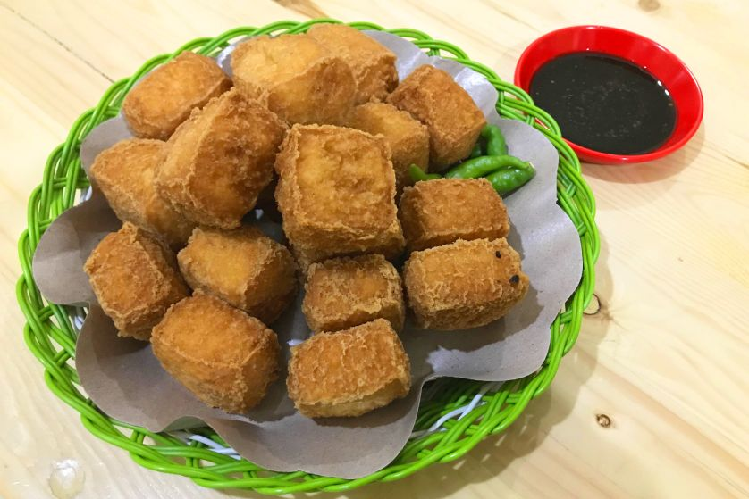
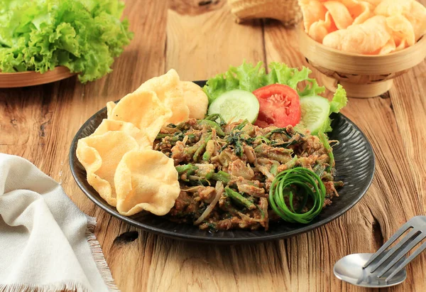
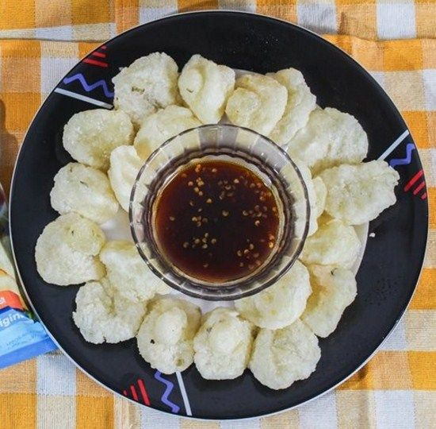

Aneka Ragam Makanan Khas Jawa Barat
1.Batagor

Batagor adalah makanan khas yang berasal dari Bandung. Batagor sendiri dibuat dari adonan bakso yang dibuat dari bahan tenggiri lalu diisi ke dalam tahu kemudian menggunakan kulit pangsit lalu digoreng. Batagor umumnya disajikan dengan siraman sambal kacang, namun saat ini banyak juga dimodifikasi sesuai selera
2.Tape

Tape merupakan makanan fermentasi tradisional yang berasal dari Jawa Barat. Tape dibuat dari beras, beras ketan atau singkong. Tape dikenal dengan makanan yang memiliki cita rasa yang khas yaitu memiliki bau alkoholik, memiliki rasa manis sedikit asam, memiliki tekstur lunak dan berair.
3.Tahu Sumedang

Tahu sumedang merupakan salah satu makanan khas daerah Jawa Barat yang cukup populer. Sebenarnya, bahan utama jajanan ini sama dengan tahu lainnya, yaitu kedelai.
Namun, jika Anda merasakannya secara langsung maka akan menyadari perbedaannya. Tahu sumedang memiliki tekstur lebih lembut meski sudah digoreng.
Anda juga akan merasakan perpaduan antara asin, gurih dan lembut meski dalamnya tidak berisi. Bisa juga dibarengi dengan cabe agar terasa pedas.
4.Lotek

Tampilan lotek sedikit mengingatkan kita pada makanan khas Jawa Timur, pecel. Bahan utama dari hidangan ini adalah sayur dan bumbu kacang.
Lalu, apa yang membedakannya? Jika perhatikan dengan seksama, lotek menambahkan bawang putih dan terasi dalam bumbunya.
Lotek juga menggunakan bala-bala sebagai pelengkap. Jika Anda penyuka pecel, maka jangan lewatkan makanan yang satu ini!
5.Cireng

Sepertinya sudah menjadi ciri khas makanan Jawa Barat menggunakan singkatan sebagai namanya.
Seperti halnya cireng, nama ini berasal dari aci digoreng. Cireng merupakan makanan yang terbuat dari tepung kanji dan dimasak dengan cara digoreng.
Cireng biasanya disajikan dengan sambal rujak atau sambal pedas manis, namun bisa juga dimakan tanpa tambahan apapun.
Seiring berjalannya waktu dan perkembangan zaman, makanan khas Jawa Barat ini mengalami berbagai modifikasi, mulai dari cireng isi mozzarella, sosis hingga cokelat yang menambah cita rasanya.